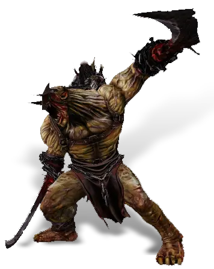

Открыть в интерактивной вики →

| Уровень | лёгк. 70 / норм. 85 / тяжел. 105 |
|---|---|
| Зоны атаки | ближняя, дальняя, ментальная |
| Шанс дропа 100% — уровни | лёгк. 1-70 / норм. 1-70 / тяжел. 1-90 |
| Шанс дропа 90% — уровни | лёгк. 71-85 / норм. 71-85 / тяжел. 91-105 |
| Шанс дропа 70% — уровни | лёгк. 86+ / норм. 86+ / тяжел. 106+ |
| Группа боссов | Страх |
| Сила (PvE) | лёгк. 3274 / норм. 5213 / тяжел. 7874 |
| Аспект арены | Solnai |
| Здоровье | лёгк. 10 000 / норм. 29 000 / тяжел. 52 000 |
| Мана | 2000 |
| Выносливость | 5000 |
Локация
- Пассаж Фёдора
- Подземелье ГМО
- Темница
Команда


Навыки


Дроп
 Средняя Фляга Уничтожения
Средняя Фляга Уничтожения  Средняя Фляга Ловкости
Средняя Фляга Ловкости  Средняя Фляга Силы
Средняя Фляга Силы  Средняя Фляга Выносливости
Средняя Фляга Выносливости  Элементарный глиф
Элементарный глиф  Ученический глиф
Ученический глиф 
 Путь страха
Путь страха 

 II-V
II-V  Гроссмейстерский глиф
Гроссмейстерский глиф 
 Даймонит 10
Даймонит 10 | Рары | Синергетики | Эпики | |||
 Рары Рары Рары Рары Рары Рары Рары Рары Рары для питомцев Рары для питомцев | 20-60 ур. |  Эпики Эпики | |||
Прочее:  Путь страха Путь страха  Средняя Фляга Выносливости Средняя Фляга Выносливости  Средняя Фляга Силы Средняя Фляга Силы  Средняя Фляга Ловкости Средняя Фляга Ловкости  Средняя Фляга Уничтожения Средняя Фляга Уничтожения | |||||
Требования для входа
лёгк.:  Ключ от лаборатории ×2
Ключ от лаборатории ×2
норм.:Ключ от лаборатории ×5
тяжел.:Путь страха Ключ от лаборатории ×5
Ключ от лаборатории ×2норм.:
Ключ от лаборатории ×5тяжел.:
Путь страха Ключ от лаборатории ×5Путь по картам
Умения
- Удар кулаком — обычная атака пробитие защиты удар в печень удар головой
- Бросок — землетрясение
- Паника